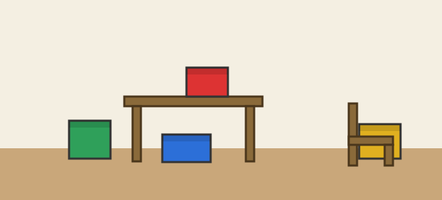

Wo steht die Kiste? in, on, under, next to, behind
Mit einem KI-Tutor lernen
Ein KI-Tutor erklärt dir diese Seite und hilft dir bei den Aufgaben. Wähl deinen Assistenten:
Mit Claude öffnen Mit ChatGPT öffnen Mit Mistral Vibe öffnen
Du nutzt dein eigenes Konto beim Anbieter. Der Assistent ist kein Angebot von lernapps.net: lernapps liefert nur Inhalte und Aufgaben. Die Wahl gilt für alle Seiten, nur auf diesem Gerät.
Wo soll die Kiste stehen?

Von links: Sophie (Zöpfe), Amir (Brille) und Peter (gelbe Jacke). Mr Hill zeigt, wo die Kisten hinsollen.
Quelle: eigene Zeichnung. Lizenz: CC-BY-4.0.Mr Hill sagt: „Jede Kiste braucht den richtigen Platz im Lagerraum.“ Dazu brauchst du kleine Wörter, die sagen, wo etwas ist. Sie heißen Präpositionen.
Das kannst du danach: Du sagst mit in, on, under, next to und behind, wo etwas steht.
| Wort | Bedeutung |
|---|---|
| table | Tisch |
| chair | Stuhl |
| shelf | Regal |
| door | Tür |
| floor | Boden |
| wall | Wand |
| room | Zimmer |
| window | Fenster |
| ball | Ball |
| green | grün |
| yellow | gelb |
| blue | blau |
| red | rot |
| is | ist |
| are | sind |
Aufgabe
Lösung
auf dem Boden richtige Antwort
on heißt „auf“. Die Kiste steht oben auf dem Boden.
im Regal
„Im Regal“ hieße in the shelf. Peter sagt on.
hinter der Tür
„Hinter“ heißt behind. Peter sagt on.
on sagt, dass etwas auf einer Fläche steht.
Wo die Kiste steht
Mit einer Präposition sagst du, wo die Kiste steht. Sie steht vor dem Ort: on the table. Fünf Wörter reichen für den Anfang: in (drin), on (auf), under (unter), next to (neben) und behind (hinter).

Fünf Plätze für eine Kiste. Unter jeder steht die Präposition.
Quelle: eigene Zeichnung. Lizenz: CC-BY-4.0.| Präposition | Bedeutung |
|---|---|
| in | drin |
| on | auf |
| under | unter |
| next to | neben |
| behind | hinter |
Merke
Im Deutschen übersetzt du on mal mit „auf“, mal mit „an“: on the floor (auf dem Boden), on the wall (an der Wand). in heißt drin (in the room). Die Präposition steht vor dem Ort, nie dahinter.
Übung
Aufgabe
Schau auf das Bild und wähle die richtige Präposition.

Welche Kiste steht wo? Es gibt eine blaue, eine gelbe, eine rote und eine grüne Kiste.
Quelle: eigene Zeichnung. Lizenz: CC-BY-4.0.Tipp
Schau auf die Kiste und auf den Tisch oder den Stuhl. Ist sie drin, oben drauf, darunter, daneben oder dahinter?
- Wo ist die rote Kiste? → The red box is … the table.
- Wo ist die blaue Kiste? → The blue box is … the table.
- Wo ist die grüne Kiste? → The green box is … the table.
- Wo ist die gelbe Kiste? → The yellow box is … the chair.
Lösung
- The red box is on the table.
- The blue box is under the table.
- The green box is next to the table.
- The yellow box is behind the chair.
Aufgabe
Lösung
Richtige Antwort: auf dem Regal – on the shelf; neben der Tür – next to the door; hinter dem Fenster – behind the window; in der Tasche – in the bag
on ist auf einer Fläche, next to ist daneben, behind ist dahinter und in ist drin.
Aufgabe
Schreibe den Satz.
Tipp
Die Präposition steht vor dem Ort. Bei einer Mehrzahl heißt es are.
- the ball · in · the box
- the bag · on · the table
- the shoes · under · the chair
- the cap · next to · the bag
Lösung
- The ball is in the box.
- The bag is on the table.
- The shoes are under the chair.
- The cap is next to the bag.
Aufgabe
Lösung
Richtige Antwort: 1. The, 2. bag, 3. is, 4. behind, 5. the, 6. chair
Zuerst steht das Ding, dann is, dann die Präposition und zuletzt der Ort.
Aufgabe
Lösung
Richtige Antwort: Die Aussage stimmt nicht.
under heißt darunter. Für oben auf dem Tisch heißt es on the table.
Aufgabe
Hör zu und schreibe den ganzen Satz auf.
Tipp
Hör genau auf die Präposition. Wo ist das Ding?
- KI
- KI
- KI
Lösung
- The ball is in the bag.
- The ball is under the window.
- Peter is next to Sophie.
Selbst sagen und einräumen
Aufgabe
Hör zu, sprich nach und nimm dich auf. Vergleiche dann mit dem Original.
Tipp
Hör den Satz zuerst. Sprich dann langsam nach und betone das Ding und den Ort.
- The cap is behind the door.KI
- Amir is next to the window.KI
- The books are on the shelf.KI
Zum Aufnehmen braucht diese Aufgabe JavaScript. Die Beispiele kannst du auch ohne anhören.
Lösung
- The cap is behind the door.
- Amir is next to the window.
- The books are on the shelf.
Offene Aufgabe
Mr Hill fragt: Wo stehen die Kisten in deinem Lagerraum? Schreibe zwei Sätze mit verschiedenen Präpositionen (zum Beispiel: The box is on the shelf. The bag is under the table).
Eine gute Antwort enthält:
Lösung
The box is on the shelf. The ball is under the chair.
Wie es weitergeht
Die Kisten haben ihren Platz. Mr Hill schaut sich im Lagerraum um und sagt, wie viele es gibt. Auf der nächsten Seite lernst du „there is“ und „there are“.